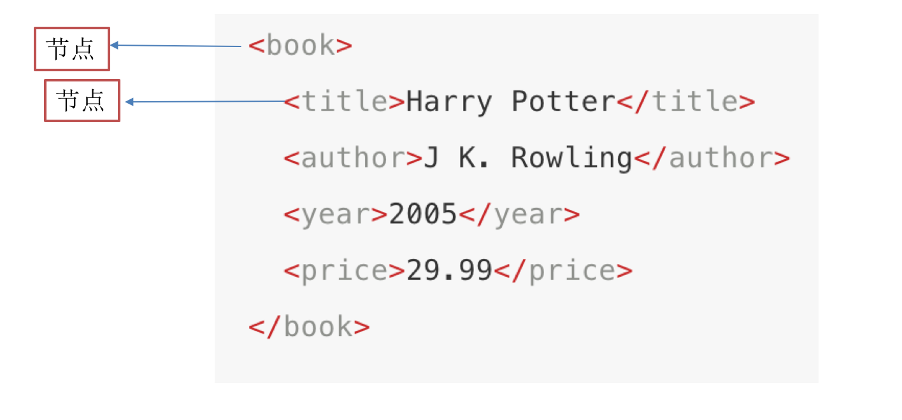
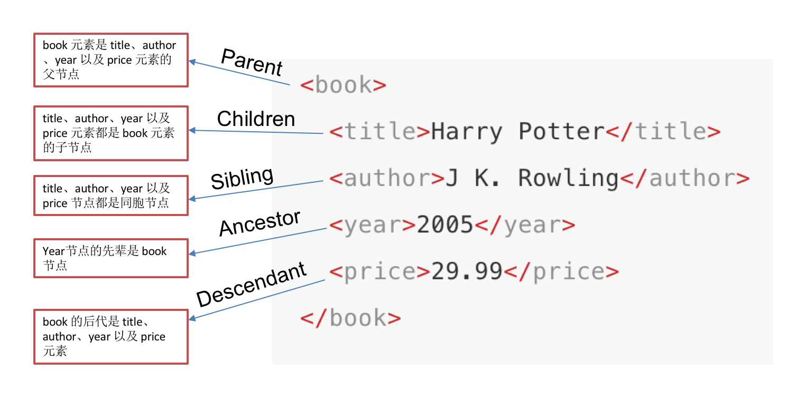
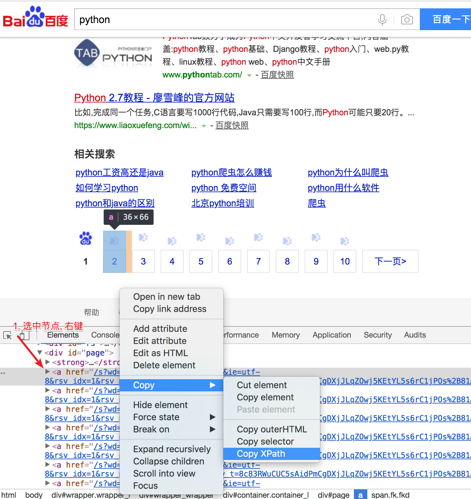

xpath和lxml类库
目标
- 了解xpath的定义
- 了解xml
- 掌握xpath的语法
1. 为什么要学习xpath和lxml
lxml是一款高性能的 Python HTML/XML 解析器，我们可以利用XPath，来快速的定位特定元素以及获取节点信息
2. 什么是xpath
XPath (XML Path Language) 是一门在 HTML\XML 文档中查找信息的语言，可用来在 HTML\XML 文档中对元素和属性进行遍历。
W3School官方文档：http://www.w3school.com.cn/xpath/index.asp
3. 认识xml
知识点：
- html和xml的区别
- xml中各个元素的的关系和属性
3.1 html和xml的区别

3.2 xml的树结构
<bookstore>
<book category="COOKING">
<title lang="en">Everyday Italian</title>
<author>Giada De Laurentiis</author>
<year>2005</year>
<price>30.00</price>
</book>
<book category="CHILDREN">
<title lang="en">Harry Potter</title>
<author>J K. Rowling</author>
<year>2005</year>
<price>29.99</price>
</book>
<book category="WEB">
<title lang="en">Learning XML</title>
<author>Erik T. Ray</author>
<year>2003</year>
<price>39.95</price>
</book>
</bookstore>
上面的xml内容可以表示为下面的树结构

上面的这种结构关系在xpath被进一步细化
4. xpath的节点关系
知识点：
- 认识xpath中的节点
- 了解xpath中节点之间的关系
4.1 xpath中的节点是什么
每个XML的标签我们都称之为节点，其中最顶层的节点称为根节点。

4.2 xpath中节点的关系

5. xpath中节点选择的工具
- Chrome插件 XPath Helper
- 下载地址：https://pan.baidu.com/s/1UM94dcwgus4SgECuoJ-Jcg 密码:337b
- Firefox插件 XPath Checker
注意： 这些工具是用来学习xpath语法的，他们都是从elements中匹配数据，elements中的数据和url地址对应的响应不相同，所以在代码中，不建议使用这些工具进行数据的提取
6. xpath语法
知识点
- 掌握元素路径的相关方法
- 掌握获取获取属性的方法
- 掌握获取文本的方法
我们将在下面的例子中使用这个 XML 文档。
<bookstore>
<book>
<title lang="eng">Harry Potter</title>
<price>29.99</price>
</book>
<book>
<title lang="eng">Learning XML</title>
<price>39.95</price>
</book>
</bookstore>
6.1 选取节点
XPath 使用路径表达式来选取 XML 文档中的节点或者节点集。这些路径表达式和我们在常规的电脑文件系统中看到的表达式非常相似。
使用chrome插件选择标签时候，选中时，选中的标签会添加属性class="xh-highlight"
下面列出了最有用的表达式：
| 表达式 | 描述 |
|---|---|
| nodename | 选中该元素。 |
| / | 从根节点选取、或者是元素和元素间的过渡。 |
| // | 从匹配选择的当前节点选择文档中的节点，而不考虑它们的位置。 |
| . | 选取当前节点。 |
| .. | 选取当前节点的父节点。 |
| @ | 选取属性。 |
| text() | 选取文本。 |
实例
在下面的表格中，我们已列出了一些路径表达式以及表达式的结果：
| 路径表达式 | 结果 |
|---|---|
| bookstore | 选择bookstore元素。 |
| /bookstore | 选取根元素 bookstore。注释：假如路径起始于正斜杠( / )，则此路径始终代表到某元素的绝对路径！ |
| bookstore/book | 选取属于 bookstore 的子元素的所有 book 元素。 |
| //book | 选取所有 book 子元素，而不管它们在文档中的位置。 |
| bookstore//book | 选择属于 bookstore 元素的后代的所有 book 元素，而不管它们位于 bookstore 之下的什么位置。 |
| //book/title/@lang | 选择所有的book下面的title中的lang属性的值。 |
| //book/title/text() | 选择所有的book下面的title的文本。 |
练习：
接下来我们通过豆瓣电影top250的页面来练习上述语法：https://movie.douban.com/top250
- 选择所有的h1下的文本
//h1/text()
- 获取所有的a标签的href
//a/@href
- 获取html下的head下的title的文本
/html/head/title/text()
- 获取html下的head下的link标签的href
/html/head/link/@href
但是当我们需要选择所有的电影名称的时候会特别费力，通过下一小节的学习，就能够解决这个问题
6.2 查找特定的节点
| 路径表达式 | 结果 |
|---|---|
| //title[@lang="eng"] | 选择lang属性值为eng的所有title元素 |
| /bookstore/book[1] | 选取属于 bookstore 子元素的第一个 book 元素。 |
| /bookstore/book[last()] | 选取属于 bookstore 子元素的最后一个 book 元素。 |
| /bookstore/book[last()-1] | 选取属于 bookstore 子元素的倒数第二个 book 元素。 |
| /bookstore/book[position()>1] | 选择bookstore下面的book元素，从第二个开始选择 |
| //book/title[text()='Harry Potter'] | 选择所有book下的title元素，仅仅选择文本为Harry Potter的title元素 |
| /bookstore/book[price>35.00]/title | 选取 bookstore 元素中的 book 元素的所有 title 元素，且其中的 price 元素的值须大于 35.00。 |
注意点: 在xpath中，第一个元素的位置是1，最后一个元素的位置是last(),倒数第二个是last()-1
练习：选择所有的电影的名称，href，评分，评价人数
6.3 选取未知节点
XPath 通配符可用来选取未知的 XML 元素。
| 通配符 | 描述 |
|---|---|
| * | 匹配任何元素节点。 |
| @* | 匹配任何属性节点。 |
| node() | 匹配任何类型的节点。 |
实例
在下面的表格中，我们列出了一些路径表达式，以及这些表达式的结果：
| 路径表达式 | 结果 |
|---|---|
| /bookstore/* | 选取 bookstore 元素的所有子元素。 |
| //* | 选取文档中的所有元素。 |
| //title[@*] | 选取所有带有属性的 title 元素。 |
6.3 选取若干路径
通过在路径表达式中使用“|”运算符，您可以选取若干个路径。
实例
在下面的表格中，我们列出了一些路径表达式，以及这些表达式的结果：
| 路径表达式 | 结果 |
|---|---|
| //book/title | //book/price | 选取 book 元素的所有 title 和 price 元素。 |
| //title | //price | 选取文档中的所有 title 和 price 元素。 |
| /bookstore/book/title | //price | 选取属于 bookstore 元素的 book 元素的所有 title 元素，以及文档中所有的 price 元素。 |
XPATH学习重点(非常重要,后面经常用,一定搞得非常熟悉)
- 定位元素
- 路径分割符
/: 单级查找- 用在最前面表示当前文档的根节点(标签)
- 只能用于分割相邻的父子节点(标签)
- 如: /html/head/meta
//: 多级查找//a查找整个文档中所有的a标签div//a查找该div下所有的a标签
- 过滤(筛选)元素
a[@href]: 选取有herf属性的标签div[@id='page']: 选取class属性为page的div标签a[text()='下一页>']: 选取文本内容为下一页的a标签a[2]: 选取匹配列表中第二个元素a[last()]: 选取匹配列表中最后一个a[position()<4]选取匹配列表中前3个a[position()>4]选取匹配列表中第4元素以后的- 获取内容
a/text()获取a标签中的文本内容a//text()获取a标签中以及所有子类标签的内容a/@href获取a标签中herf属性的值
- 路径分割符
7. 使用工具来拷贝xpath

- 说明拷贝的XPATH是依照浏览器渲染的内容生成的XPATH,
- 但是浏览器渲染的内容与我们使用requests请求的数据不完全一致,
- 所以拷贝XPATH, 并解决所有XPATH问题, 但是可以解决80%的XPATH问题.
- 如果拷贝的XPATH不能提取我们想要的数据, 就需要根据返回的内容自己写了
- xpath三种境界
- 会拷贝XPATH (解决60%的XPATH问题)
- 能看懂XPATH, 并根据需求进行修改 (解决80%XPATH问题)
- 根据内容写XPATH (解决100%XPATH问题)
小结
本小结重点
- 理解xml和html的区别
- 掌握xpath的使用
其他
- 在xpath 的语法中大家只需要掌握
\\,@,text()的使用就掌握了xpath 80%的技巧 - xpath helper工具不建议在写爬虫的时候使用
- 在xpath 的语法中大家只需要掌握